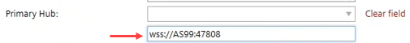

BACnet/SC
BACnet/SC 数据链路允许您在 BACnet 网络内的设备之间创建安全连接。通信因此得到验证和加密。不同私有 IP 网络中的设备之间也可以进行通信。截至撰写本文时，当前的 Desigo 系统支持大楼集线器、多层集线器、故障转移集线器和节点1，由 Desigo CC 管理站、房间控制器和系统控制器组成2.
1指示性数字，实际 Desigo 系统限制取决于确切的拓扑和负载。
2请查阅相应产品的数据表，了解有关其各自 BACnet/SC 支持的更多详细信息，例如，所需的最低固件版本、支持的节点或集线器功能以及系统限制。
有关 BACnet/SC 的更多信息，请参阅文档 A6V11159798 中有关 BACnet/SC 网络的章节Application Guide for BACnet Networks in Building Automation.
要更熟悉该功能，请观看BACnet/SC video（在 YouTube 上）。
1 | 任务选择器 | 2 | 建筑结构 |
3 | BACnet/SC topology | 4 | 工具栏 |
5 | 详细信息窗格 |
|
|
① Task selector
任务 | 描述 |
|---|---|
建筑结构 | |
中央职能 | |
设备列表 | |
应用和设备概述 | |
证书管理 | |
网络检查 | |
BACnet/SC | 当前任务 |
② Building structure
环境 | 描述 | |
|---|---|---|
姓名 | 显示建筑物、楼层、设备等的名称。可以在属性窗口中编辑名称。符号显示设备的功能。 | |
| 设备是一个集线器。 | |
| 对于此设备，主集线器被分配给外部 3rd派对中心。
Note: 没有自动验证地址是否为3rd派对中心是正确的。  | |
| 设备是具有主集线器的节点。 | |
| 配置无效。 | |
| 设备是故障转移集线器。 | |
| 对于此设备，故障转移集线器被分配给外部 3rd派对中心。 | |
| 对于该设备，定义了故障转移集线器。 | |
描述 | 显示建筑物、楼层、设备等的描述。可以在属性窗口中编辑描述。 | |
设备类型 | 显示相应的设备类型：
| |
开发。研究所。 # | 显示相应的设备实例编号。 | |


③ BACnet/SC topology
环境 | 描述 |
|---|---|
姓名 | 显示连接到 BACnet/SC 拓扑的设备的名称。中心显示在左侧，节点分组到相应的中心内。 |
故障转移中心 | 定义设备是否用作故障转移集线器。如果普通集线器不可用，则使用故障转移集线器。注意：故障转移集线器只能保护主集线器的 BACnet/SC 节点，不能保护任何（路由的）非 BACnet/SC 设备。 |
故障转移构建中心 | 使用构建集线器配置时显示故障转移集线器。否则该字段为空。 |
描述 | 显示设备的描述。可以在属性窗口中编辑描述。 |
地点 | 显示设备到建筑物、楼层等的分配。 |
设备类型 | 显示相应的设备类型，例如PXC4.E16。支持 PXC5/7、DXR2.E 和 PXC3。 |
SC network | 显示设备所属的 BACnet/SC 网络。这可以是专用网络或互联网上的另一个网络。 |
SC 网络建设 | 如果使用楼宇集线器配置，则显示网络号。否则该字段为空。 |
BACnet/IP | 启用或禁用。选择对应栏，打开下拉菜单，开启设备的/disable BACnet IP 通讯。 |
BACnet/IP routing | 定义 BACnet 路由是否处于活动状态。 必须激活 BACnet 路由才能允许 BACnet/SC 网络和 BACnet 之间进行通信，而无需安全连接网络。 |
UDP port | 显示该设备分配的 UDP 端口。 |
IP network | IP 指示设备进入专用网络或通过 LAN/WAN 与另一个网络进行通信。 |
④ Toolbar
任务 | 描述 |
|---|---|
查看 | 检查 BACnet/SC 网络的调整并显示包含结果的日志文件。 |
分配集线器 | 将设备分配为集线器。 |
取消分配 | 取消分配集线器或节点。 |
⑤ Details pane
属性（详细信息窗格）的内容根据所选元素的不同而有所不同。
Building element details
Details pane of the device version ≤ 1.5
Room and segment details
Application template details
Group member details